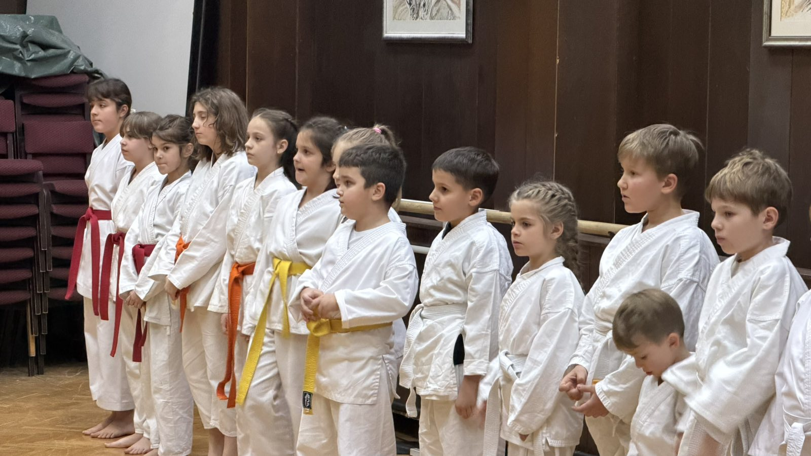
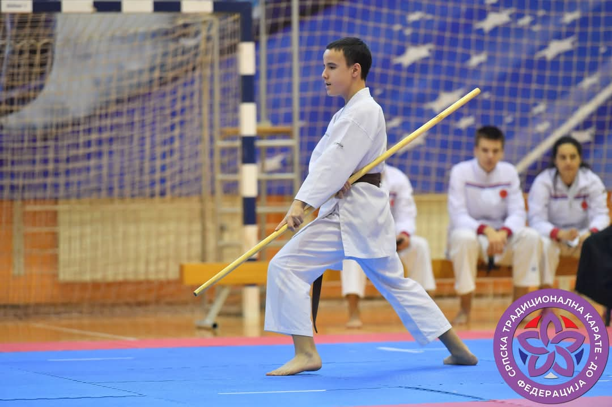
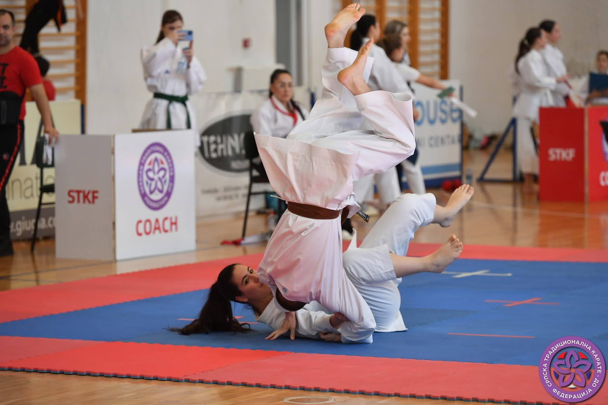

BLOG – Karate klub Japan
Znanje, tradicija i razvoj kroz karate
Dobrodošli na blog Karate kluba Japan! Ovde delimo zanimljive tekstove o karateu, vaspitanju, tradiciji i zdravom razvoju dece i odraslih.
Naš cilj je da približimo filozofiju i vrednosti koje stoje iza svakog treninga.
Zašto je karate više od sporta?
Kada neko prvi put čuje reč karate, često pomisli na udarce, borbu i takmičenje. Međutim, karate je mnogo više od fizičke aktivnosti ili sportskog nadmetanja...
Pročitaj više →
RoditeljstvoKako karate utiče na držanje i pažnju kod dece?
Savremeni način života sve više utiče na zdravlje dece – i to već u najranijem uzrastu. Dugotrajno sedenje, korišćenje telefona...
Pročitaj više →Kratka istorija karatea - od samuraja do danas
Karate, kakav danas poznajemo, nije nastao preko noći niti kao sport u modernom smislu te reči. Njegovi koreni sežu duboko...
Pročitaj više →
TradicijaŠta je kobudo - umetnost tradicionalnog oružja
Kada se govori o tradicionalnim borilačkim veštinama sa Okinave, karate i kobudo su neraskidivo povezani. Dok karate predstavlja veštinu borbe...
Pročitaj više →
KarateKarate i samoobrana - sigurnost kroz znanje
U savremenom društvu, bezbednost dece i mladih postaje jedno od najvažnijih pitanja za roditelje. Karate nije agresija. Karate je umetnost kontrole...
Pročitaj više →Zašto me dete ne sluša i šta da radim?
Ako imate utisak da vas dete ne sluša, ignoriše vaše zahteve ili „radi po svom“, niste sami. Ovo je jedno od najčešćih pitanja koje roditelji postavljaju...
Pročitaj više →Zašto je sport važan za svako dete?
Sport nije samo fizička aktivnost. On razvija: disciplinu, koncentraciju, samopouzdanje, socijalne veštine i kontrolu emocija...
Pročitaj više →Da li postoji "najbolji sport" za svako dete?
Ne postoji univerzalni odgovor. Ali postoji logika izbora: Ako želite disciplinu, fokus, samopouzdanje i kontrolu ponašanja, snagu i tehniku samoodbrane...
Pročitaj više →Dete je agresivno – da li je to normalno i kako reagovati?
Jednog dana dete dođe iz škole ili treninga i kaže da je imalo konflikt. Drugi put viče, udara ili se ljuti bez jasnog razloga...
Pročitaj više →Koliko dete sme da koristi telefon (i kako ga odvojiti od ekrana)?
Jedan sasvim običan trenutak u kući: Dete gleda crtani film ili igra igricu, potpuno fokusirano. Zovete ga jednom… nema reakcije...
Pročitaj više →Kako da izgradim autoritet kod deteta bez kazne i vikanja?
Postoji trenutak u gotovo svakoj porodici kada roditelj stane i zapita se: Dete ponavlja isto ponašanje. Granice se pomeraju...
Pročitaj više →Kako prepoznati da je vreme da dete počne da trenira sport?
Postoji jedan trenutak koji većina roditelja oseti, ali retko ume da ga jasno definiše. Dete počinje da ima više energije nego ranije...
Pročitaj više → Karate
Karate
Više od treninga — dugogodišnji sistem rada sa decom
Kako jedan karate klub već skoro 30 godina menja način na koji deca u Srbiji odrastaju...
Pročitaj više →